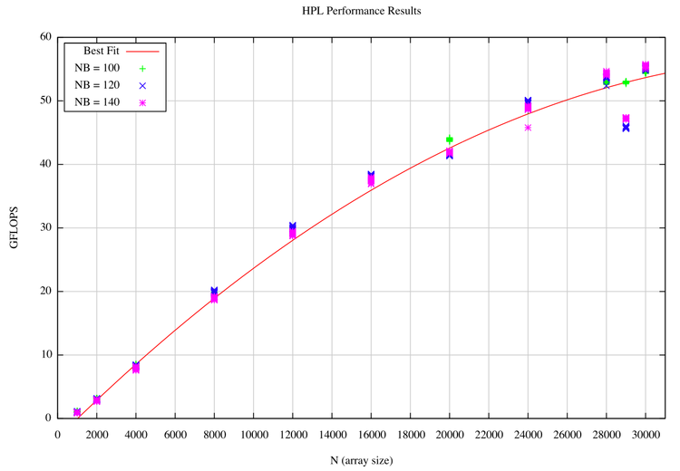

For performance measurement we used the standard High Performance Linpack benchmark. There are a number of variable that are adjustable with this program. For our purposes we used N = { 1000, 2000, 4000, 8000, 12000, 16000, 20000, 24000, 28000, 29000, 30000 }. Within each of these problem sizes we used a block size of NB = { 100, 120, 140, 160, 180, 200 }, though performance dropped off after a block size of 140 so we do not include those values in our graph.
As can be seen by the graphic below, as N grew we were able to get more performance out of our cluster. This is because communication happens less frequently and the system is becoming less and less I/O bound and more compute bound. We were able to achieve maximum performance of 55.76 GFLOPS. This occurred using the WR00R2C4 tests at a block size NB = 140 and a problem size N = 30000
